| 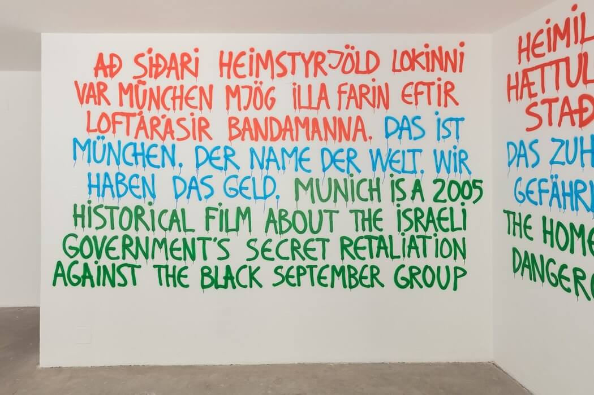 „This is Munich", 2018, Alltsaman-Das Ganze-All of it, Kunstraum München (c. Alexander Steig), 29.03. - 06.05.2018 |
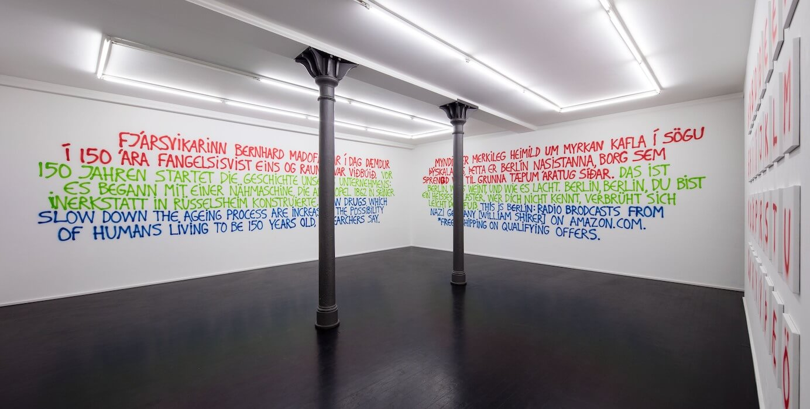 „Þetta er það-Das ist es-This is it", 2015, Kuckei+Kuckei, Berlin, 17.10. - 19.12.2015 |
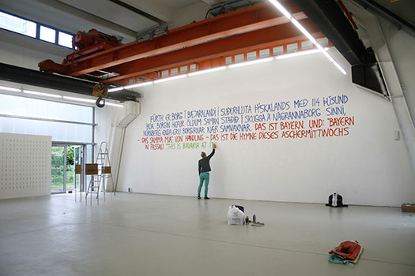 „Correlation", (c. Alexander Steig) Halle50, München, 30.05. - 09.06.2013 |
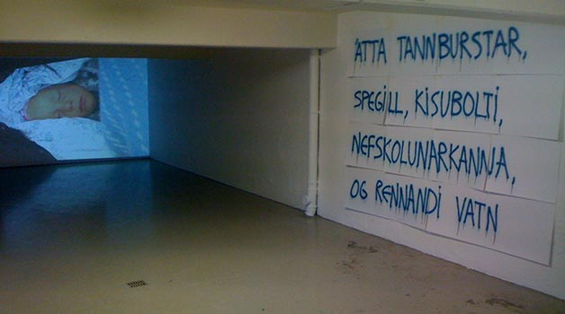 „Rennandi vatn og fleiri ný verk", Populus Tremula, Akureyri, 09.03. - 10.03.2013 |
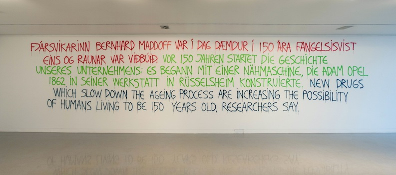 „Local-Global", (c. Hlynur Helgason) Akureyri Art Museum, 14.07.-09.09.2012 |
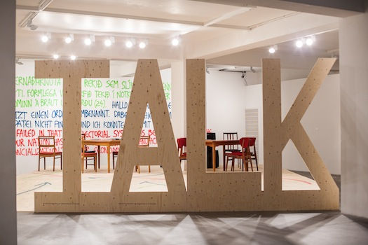 „(I)ndependant people", (c. Jonatan Engqvist), Hlynur Hallsson & Jóna Hlíf Halldórsdóttir, Reykjavík Art Museum, 19.05.-03.09.2012 |
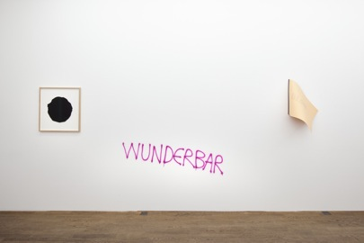 „TEXT", Kuckei+Kuckei, Berlin, 15.09.-17.12.2011 |
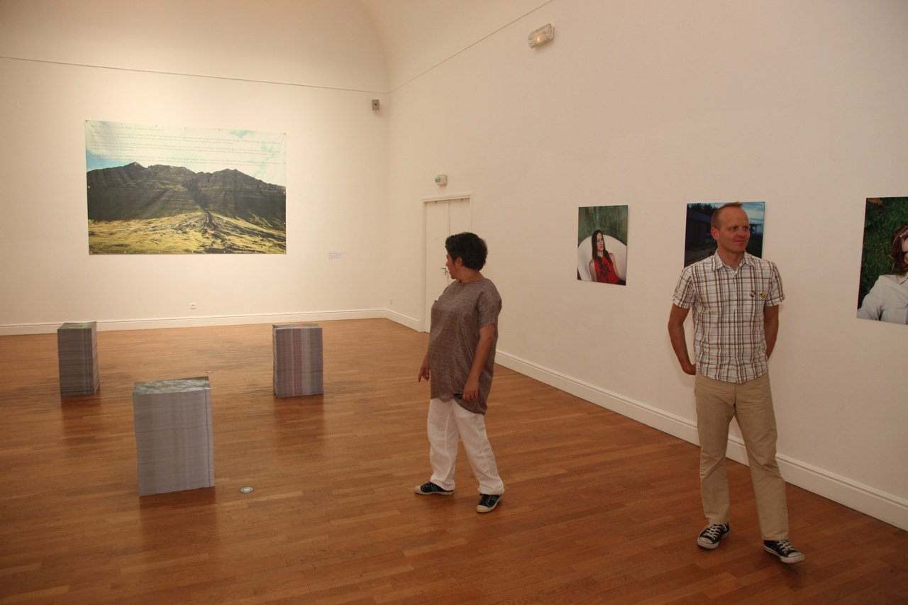 „Rencontre Platonique", (c. Sophie Roube) Musée Denys-Puech, Rodez (F) 01.10.2011-29.01.2012 |
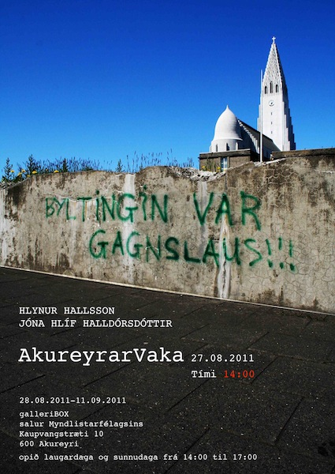 „BYLTINGIN VAR GAGNSLAUS!!! / THE REVOLUTION WAS USELESS", Hlynur Hallsson & Jóna Hlíf Halldórsdóttir, GalleríBOX, Akureyri, 27.08. - 11.09.2011 |
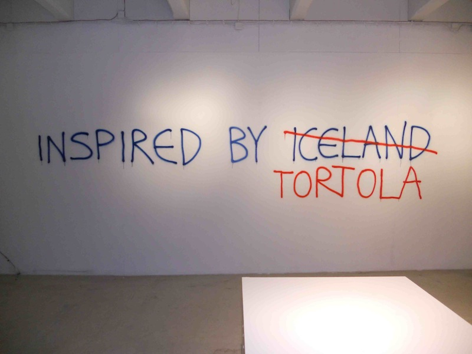 „Koddu. The Icelandic Case", The Living Art Museum, Reykjavík, 16.04. - 15.05.2011 |
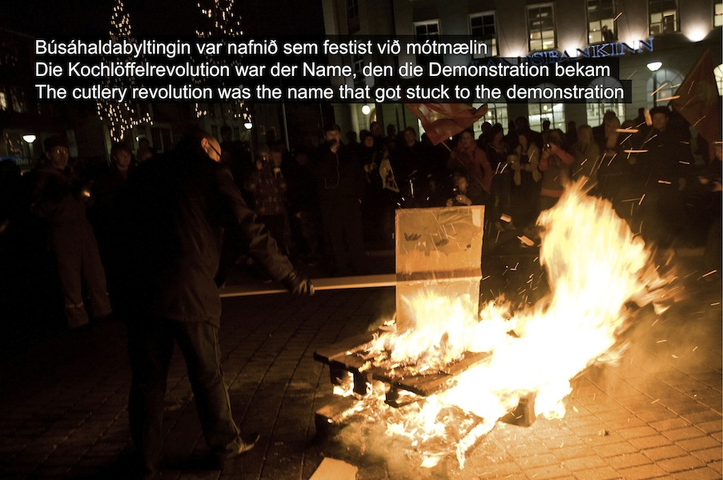 „Reality Check”, Reykjavík Art Festival, 15.05. - 30.06.2010 / „Leinen los!", Kunstverein Hannover, 12.06. - 15.08.2010 |
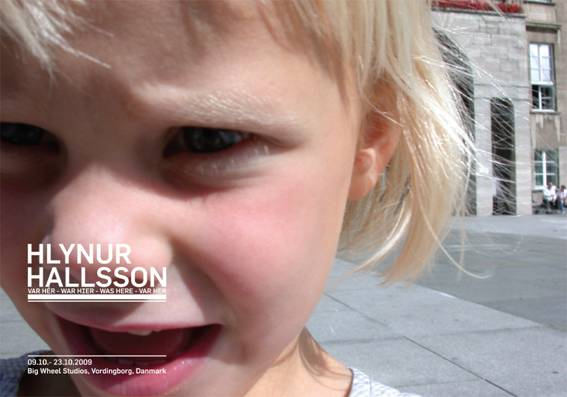 Hlynur Hallsson: „Var hér - War hier - Was here - Var her", Big Wheel Studios, Vordingborg, (DK) 09.10. - 23.10.2009 |
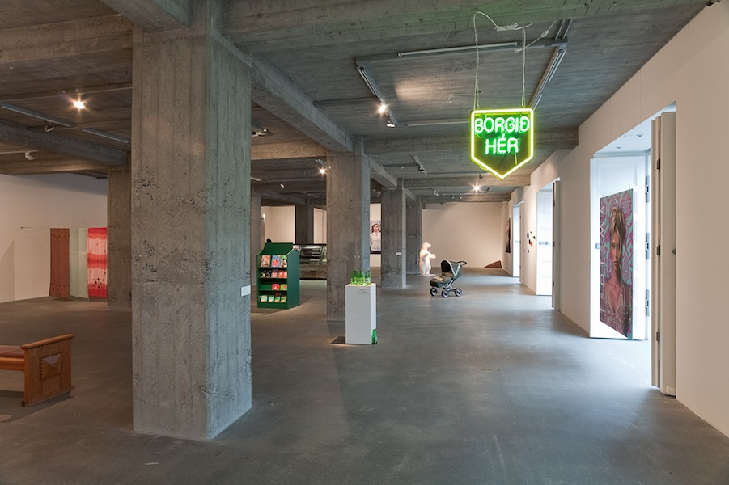 Hlynur Hallsson: „út/inn - raus/rein - out/in", Reykjavík Art Museum, Hafnarhús. 06.11.2008 - 11.01.2009 |
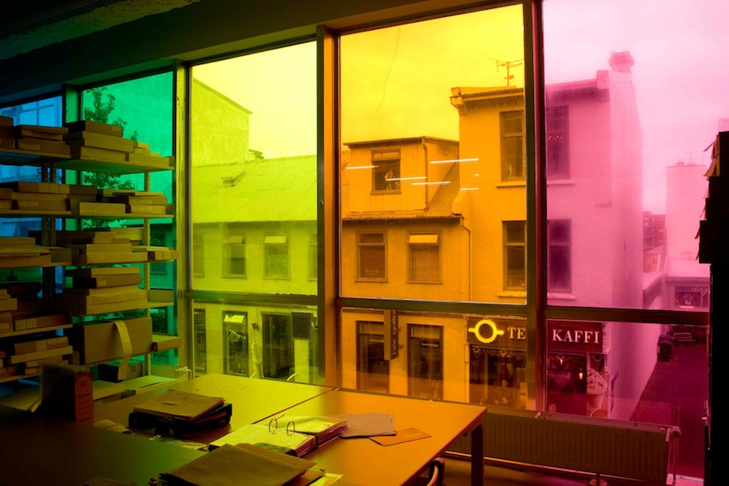 Hlynur Hallsson: „tillit - rücksicht - regard", The Living Art Museum, Reykjavík 16.08. – 27.09.2008 |
 "European Attitude", Zendai Museum of Modern Art, Shanghai, (RC) 23.02. 2008 - 16.03 2008 |
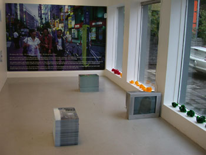 Hlynur Hallsson: Þetta - Das - This, DaLí Gallerí, Akureyri (IS), 21.09. - 11.10. 2007 |
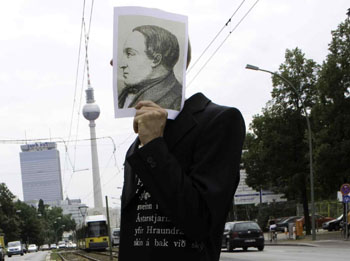 Skyldi' ég vera þetta sjálfur, Ketilhúsið, Akureyri, 25.08. - 23.09.2007 |
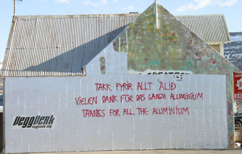 Hlynur Hallsson: Drulla - Scheisse - Mud, VeggVerk, Akureyri (IS), 31.03. - 25.05.2007 |
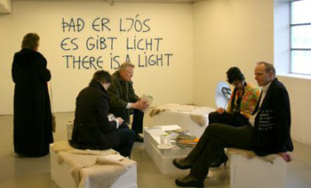 Hlynur Hallsson: Ljós - Licht - Light, GalleríBOX, Akureyri (IS), 10.03. - 25.03.2007 |
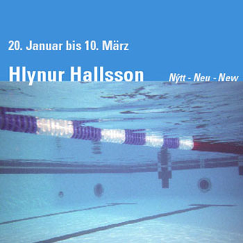 Hlynur Hallsson: Nýtt - Neu - New, Kuckei+Kuckei, Berlin 20.01.– 10.03.2007 |
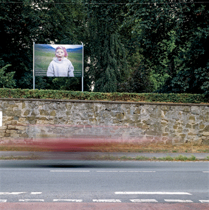 Neue Kunst in Alten Gärten, Gehrden-Lenthe, 27.08 – 08.11 2006 |
 Hlynur Hallsson. HM fyrir alla - WM für alle - WC for all, AWD Arena, Hannover (Seitenwechsel, ART IG) 07.07.2006 |
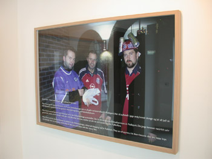 Hlynur Hallsson: Myndir - Bilder - Pictures, Jónas Viðar Gallery, Akureyri 04.03.– 25.03.2006 |